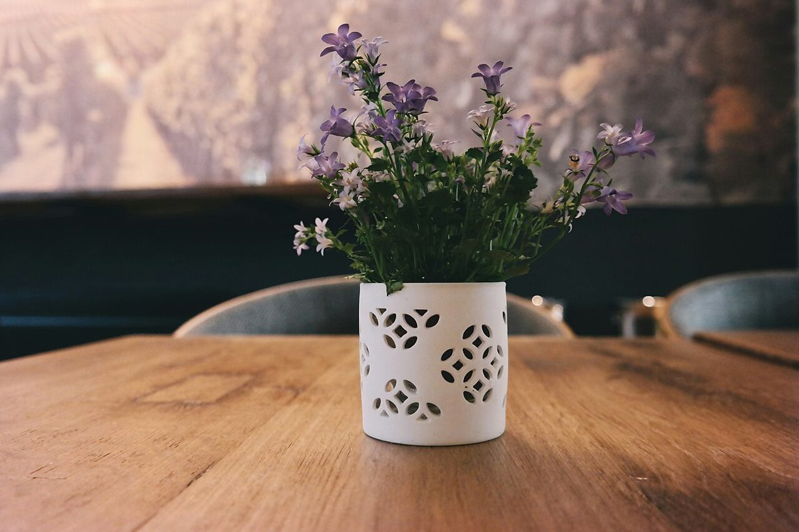
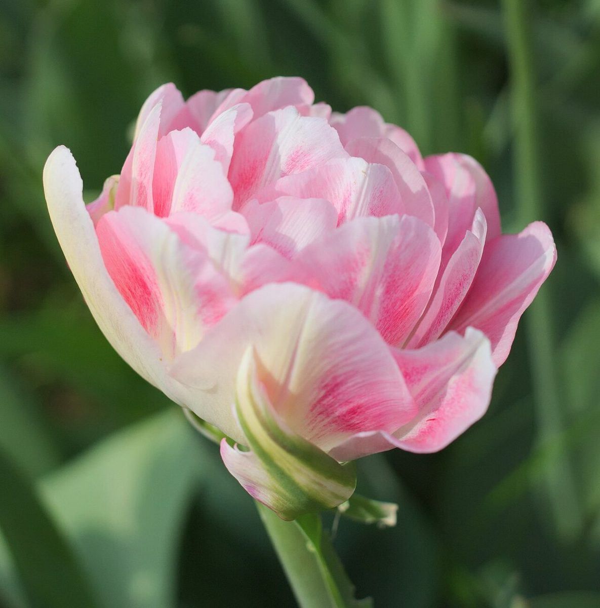
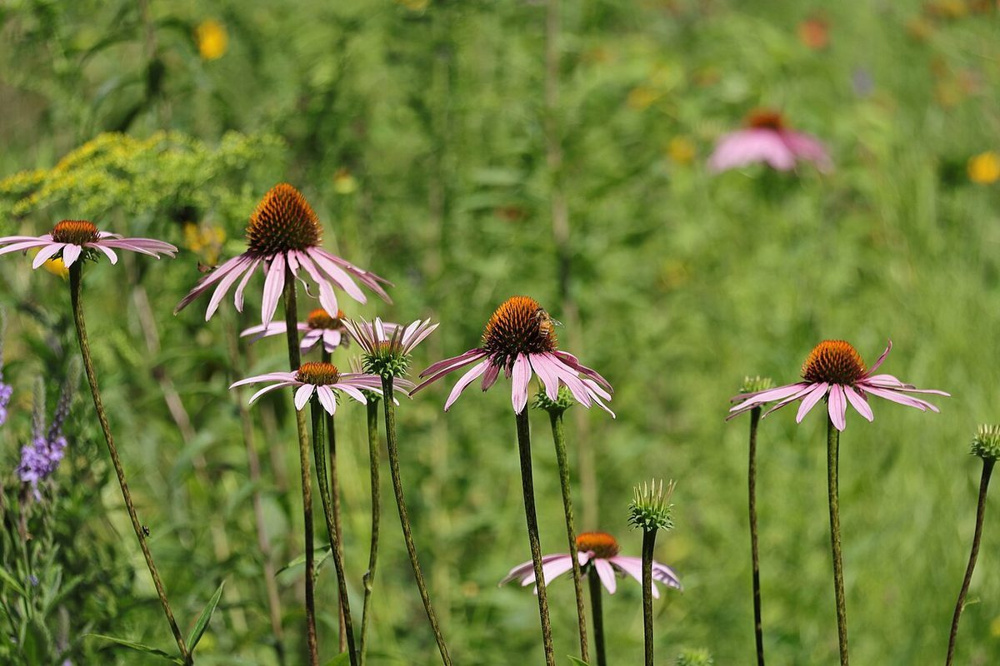
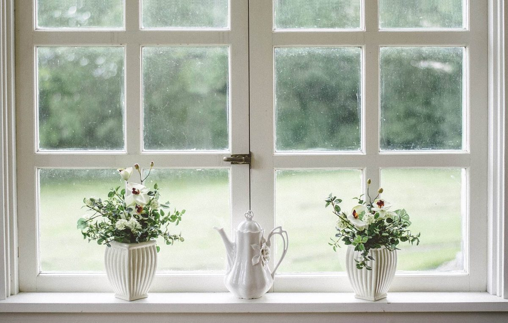

ABOUT
お店のこと
確認できている情報は、所在地とInstagramのみです。ほかの項目は準備中として、空けてあります。



写真は花とコーヒー豆のイメージです。お店のものではありません。
ご案内
わかっていること
| 所在地 | 〒970-8025 福島県いわき市平南白土1丁目16-12 |
|---|---|
| 電話 | 準備中 |
| 営業時間 | 準備中 |
| 定休日 | 準備中 |
| ご予約 | 準備中 |
| 駐車場 | 準備中 |
| SNS | Instagram @a.noeud_flower_and_cafe |
部位 4〜6(制作側の連想)
台の「受け止める側」の三つ
配置図の残り三つの部位です。ボールが走る面と、入る口と、数える仕組みです。制作側の連想で、お店の理念・由来とは無関係です。実際の製品の仕様を示すものでもありません。
4
フィールド
ボールが転がる緑の盤面。白い線で区画を示す。
5
ゴール口
盤面の両端にあいた、ボールが落ち込む開口部。
6
スコアカウンター
台の側面に渡した、玉などで得点を数える仕組み。
ギャラリー(イメージ)
写真のイメージ



写真はイメージです。お店のものではありません。